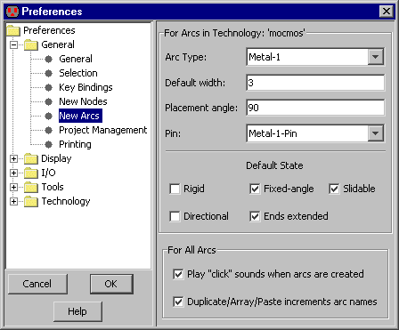

Предпочтения(preferences) "New Arcs" (в меню File / Preferences..., секция "General", закладка "New Arcs") позволяет вам управлять процессом создания дуги.
Это не оказывает влияния на существующие дуги: они уже созданы.
Верхняя часть окна позволяет вам устанавливать умолчания для конкретных видов дуг в текущей технологии.
Вы выбераете "Arc Type" и далее устанавливаете умолчания (такие как "Default width").
"Placement angle" это угол размещения для этого типа дуги (в градусах).
Значение 90 позволяет устанавливать дуги с 0, 90, 180 или 270-ти градусным наклоном: декартова система координат (прямоугольная ориентация). Значение 45 позволяет устанавливать их под другими восьмью углами (удобно в схематике).
Значение 0 позволяет устанавливать их под любым углом (используется в artwork (оригинал фотошаблона?)).
"Pin" - это узел, который используется для подключения двух дуг.
Это обычно узел "Pin" (см Раздел 7-1-1). Если изменить узел с помощью конфигурации (например контактный узел) тогда эти контакты будут установлены на изгибе этой дуги.
Переключатели в секции "Default State" могут иметь следующие значения:
- RЖестко закрепленная - дуга недеформируема по длине и зависима от ее узлов
(см. Раздел 5-2-1).
- С зафиксированным углом - когда дуга остается под определенным углом когда ее конец перемещается
(см. Раздел 5-2-1).
- Подвижная(скользящая) - когда дуга скользит вокруг ее узлового порта
(см. Раздел 5-2-2).
- Ориентированный - когда на дуге изображена стрелка
(см. Раздел 5-4-1).
- Краевое удлинение - когда дуга выступает за конечные точки на половину от ее ширины
(см. Раздел 5-4-3).
|  |
В нижней части границы диалогового окна расположены элементы управления для всех дуг.
- "Play 'click' sounds when arcs are created" - проигрывает звук для подтверждения создания дуги. Этот звук - одиночный щелчок для одной дуги, двойной щелчок для двух дуг, и тройной щелчок для трех или больше дуг.
- "Duplicate/Array/Paste increments arc names" - устанавливает, когда идентефикатор дуги должен оставаться уникальным после того, как эта дуга была размножена, сгруппирована или вставлена.